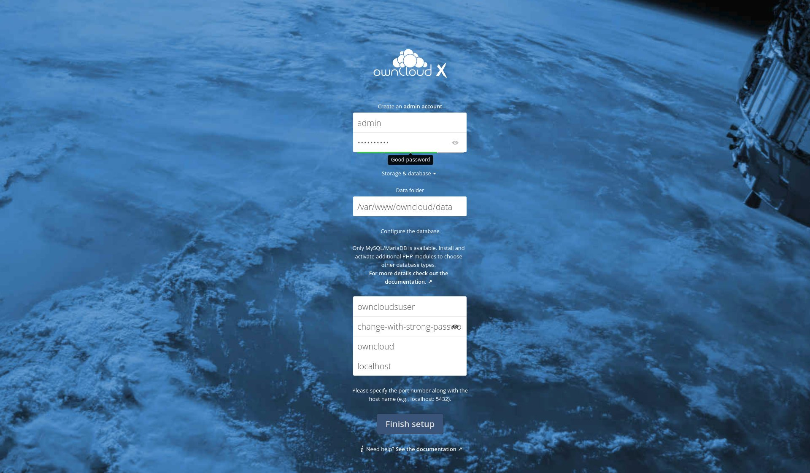
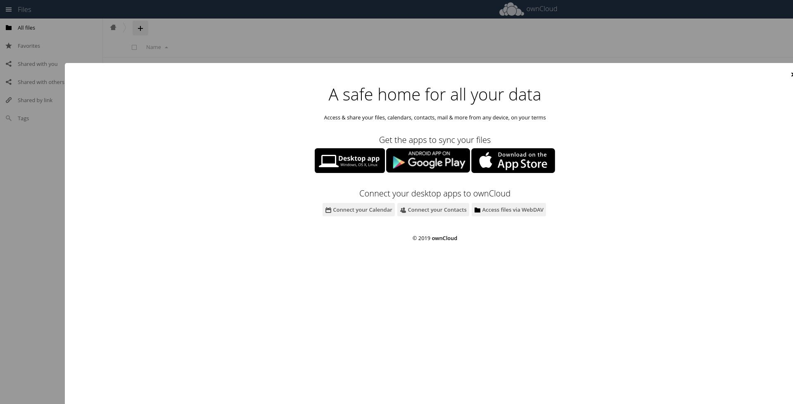

在 CentOS 8 上安装和配置 OwnCloud
本教程说明了如何在 CentOS 8 上使用 Apache 安装和配置 ownCloud 。
ownCloud 是一个开放源代码，自托管的云平台，用于管理和共享文件。它可以替代 Dropbox ， Microsoft OneDrive 和 Google Drive 。 ownCloud 可通过应用程序进行扩展，并具有适用于所有主要平台的桌面和移动客户端。
先决条件
在继续执行以下步骤之前，请确保满足以下先决条件：
- 以 root 或具有 sudo 访问权限的用户身份登录。
- 您已经在系统上安装了 MariaDB ， Apache 和 PHP 7.2 或 7.3 。
创建数据库
ownCloud 支持 SQLite ， Oracle 12g ， PostgreSQL 9 ， MariaDB 和 MySQL 。我们将使用 MariaDB 作为数据库后端。
通过键入以下内容登录到 MariaDB Shell ：
sudo mysql
运行以下 SQL 语句创建一个新数据库：
CREATE DATABASE owncloud CHARACTER SET utf8mb4 COLLATE utf8mb4_general_ci;
创建一个新的数据库用户并授予访问权限：
GRANT ALL ON owncloud.* TO 'ownclouduser'@'localhost' IDENTIFIED BY 'change-with-strong-password';
完成后，通过键入以下命令退出 MariaDB 控制台：
EXIT;
安装 Apache 和 PHP 模块
ownCloud 是一个 PHP 应用程序。 CentOS 8 附带了 ownCloud 支持的 PHP 7.2 ，但其官方文档建议使用 PHP 7.3 。
运行以下命令以安装所有必需的 PHP 扩展：
sudo dnf install php php-curl php-gd php-intl php-json php-ldap php-mbstring php-mysqlnd php-xml php-zip php-opcache
通过重新启动 FPM 服务来加载新模块：
sudo systemctl restart php-fpm
下载 ownCloud
在撰写本文时， ownCloud 的最新稳定版本是 10.3.2 版。在继续下一步之前，请访问 ownCloud 下载页面并检查是否有新版本的 ownCloud 。
使用以下 wget 命令下载 ownCloud zip 存档：
wget https://download.owncloud.org/community/owncloud-10.3.2.tar.bz2 -P /tmp
下载完成后，将存档解压缩到以下 /var/www 目录：
sudo tar jxf /tmp/owncloud-10.3.2.tar.bz2 -C /var/www
设置正确的所有权，以便 Apache Web 服务器可以完全访问 ownCloud 的文件和目录。
sudo chown -R apache: /var/www/owncloud
如果 SELinux 在您的系统上运行，则需要更新 SELinux 安全上下文：
sudo chcon -tR httpd_sys_rw_content_t /var/www/owncloud
配置 Apache
打开文本编辑器并创建以下 Apache 配置文件。
sudo nano /etc/httpd/conf.d/owncloud.conf
文件 /etc/httpd/conf.d/owncloud.conf
Alias /owncloud "/var/www/owncloud/"
<Directory /var/www/owncloud/>
Options +FollowSymlinks
AllowOverride All
<IfModule mod_dav.c>
Dav off
</IfModule>
SetEnv HOME /var/www/owncloud
SetEnv HTTP_HOME /var/www/owncloud
</Directory>
重新启动 Apache 服务以激活更改：
sudo systemctl restart httpd
安装 ownCloud
既然已经下载了 ownCloud ，并且已经配置了服务，请打开浏览器并通过访问服务器的域名或 IP 地址，然后通过 /owncloud 以下命令开始 ownCloud 安装：
https://domain_name_or_ip_address/owncloud
您将看到 ownCloud 设置页面。

如果您无法访问该页面，则可能是防火墙阻止了端口 80 或 443 。
使用以下命令打开必要的端口：
sudo firewall-cmd --zone=public --add-port=80/tcp
输入所需的管理员用户名和密码以及先前创建的 MySQL 用户和数据库详细信息。
点击 Finish setup 按钮。安装过程完成后，您将被重定向到以 admin 用户身份登录的 ownCloud 仪表板。

结论
您已经了解了如何在 CentOS 8 计算机上安装和配置 ownCloud 。如果您的域名与您自己的 Cloud 服务器相关联，则应使用免费的 Let’s Encrypt SSL 证书来保护 Apache 。
要查找有关如何管理 ownCloud 实例的更多信息，请访问 ownCloud 文档页面。